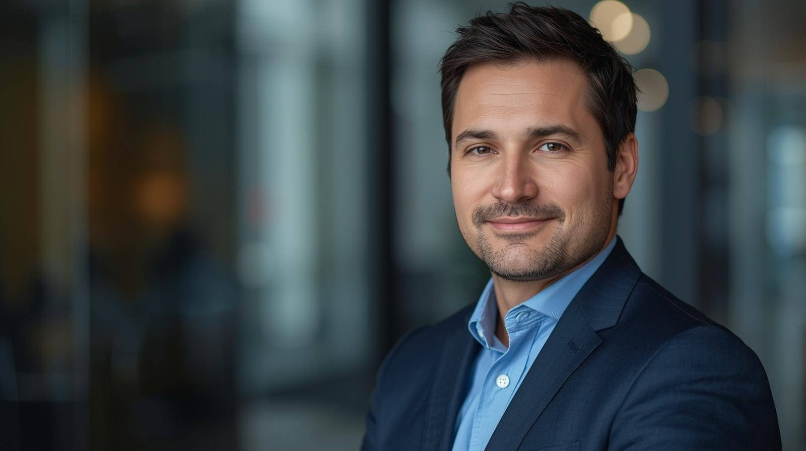
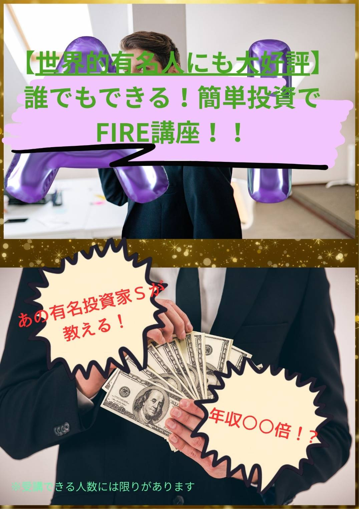
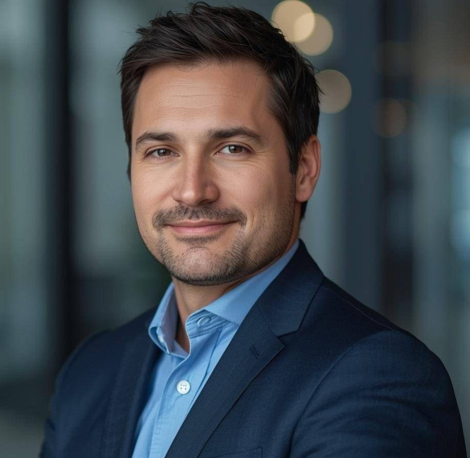

いま、一部のプロ投資家の間で密かで実践されている資産形成法を今回特別に公開します！
監修は今資産家たちの間で話題の投資家Sさんです！
このプログラムでは、独自の「分散型資産最適化ロジック」をベースに、マーケットの歪みを活用したポジショニングを行います。従来の投資とは異なり、「タイミング」ではなく「構造」に着目することで、安定的な成果を実現します。さらに、独自開発された「デュエルインカム設計」により、リスクとリターンのバランスを最適化しています。これにより、再現性の高いキャッシュフローの構築が可能になります。
詳細はセミナー内でのみ公開しています。
すでに多くの方に申し込みいただき、残り枠はあとわずかとなっております。
受講するかどうかであなたの未来が大きく変わります。

国内外のマーケットに精通し、これまで複数の資産運用プロジェクトに関与してきた実績を持つ。独自の投資理論を体系化し、延べ1,000名以上に対して資産形成のアドバイスを提供。20代で経済的自由を実現し、現在は次世代の投資家育成に注力している。これまで手がけた案件は多岐にわたり、安定した成果を継続的に生み出しているとされている。現在は限られた参加者にのみ、そのノウハウを直接伝える活動を行っている。